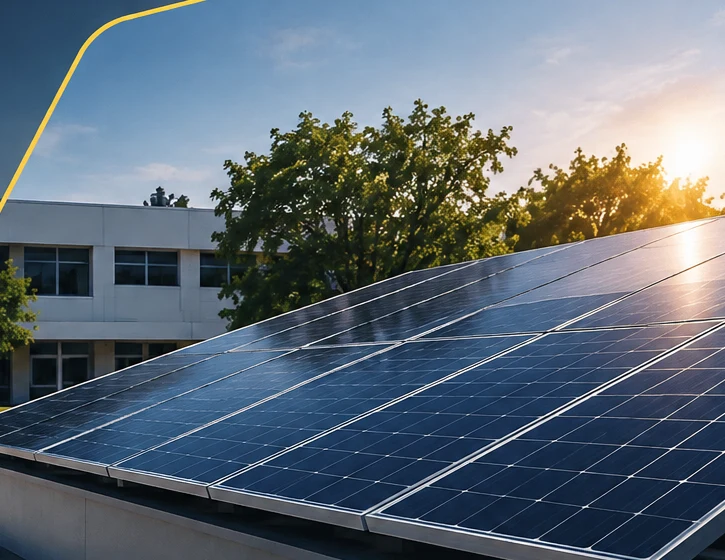

01
Analiza
Registra equipos, potencia y horas de uso para estimar el consumo eléctrico del aula.
Base disponibleDel consumo eléctrico a una propuesta solar clara. SG Energy convierte datos de un aula en una base para dimensionar y cotizar sistemas fotovoltaicos.

/ 01 — EL PROYECTO
SG Energy nace como parte del reto de Análisis de Circuitos Eléctricos del Tecnológico de Monterrey. La meta es convertir el análisis del consumo en una propuesta técnica y económica comprensible.
Comenzamos con un salón de clases y avanzamos hacia la selección de paneles, inversores, baterías y equipos comerciales con datos verificables.
Entrar al simulador/ 02 — QUÉ HACE SG ENERGY
Un proceso claro en cuatro pasos, desarrollado por etapas durante el curso.
Registra equipos, potencia y horas de uso para estimar el consumo eléctrico del aula.
Base disponibleDetermina paneles solares y estudia conexiones eléctricas, generación y pérdidas.
Próxima etapaCompara equipos reales, inversión, ahorro estimado y periodo de recuperación.
En desarrolloPresenta resultados en una propuesta PDF clara para un cliente no especialista.
En desarrollo/ 03 — QUIÉN ESTÁ DETRÁS
Desarrollo individual de Santiago Gómez para la situación-problema de TE1020. La aplicación se construye por etapas, con énfasis en fórmulas comprobables, compatibilidad eléctrica y comunicación responsable.
/ 04 — COMIENZA AQUÍ
Explora la primera versión funcional del simulador.